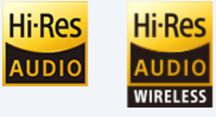
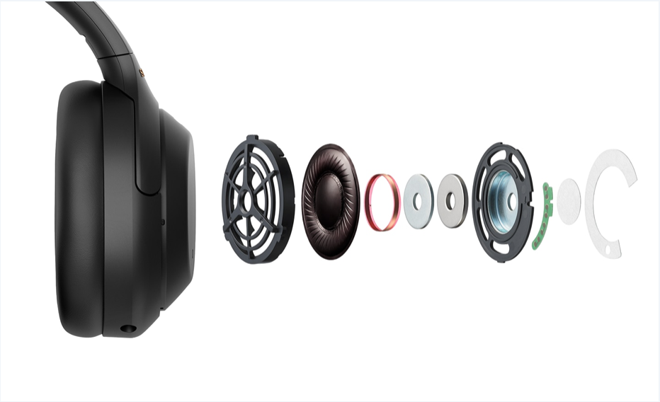

LDAC전송으로 기존 BLUETOOTH 오디오보다 약 3배 더 많은 데이터(최대 전송 속도 약 990kbps)를 전송한다.
이를 통해 유선 연결로 진행되는 음악 감상에 버금가는 탁월한 프리미엄 음질로 하이 레졸루션 오디오 콘텐츠를 즐길 수 있다.
HD노이즈 캔슬링 프로세서 QN1에 통합된 내장형 아날로그 앰프는 휴대형 장치에서 타의 추종을 불허하는 신호 대 노이즈 비와 낮은 왜곡을 실현하고 탁월한 음질을 제공한다.

액정 폴리머(LCP) 다이어프램을 갖춘 강력한 40mm 드라이버 덕분에 헤드폰이 강한 비트를 완벽하게 전달하고 최대 40khz의 광범위한 주파수 범위를 재현할 수 있다.

DSEE Extreme(디지털 음질 개선 엔진)을 통해 압축된 디지털 음악 파일이 실시간으로 업스케일된다. (실시간 AI 분석)